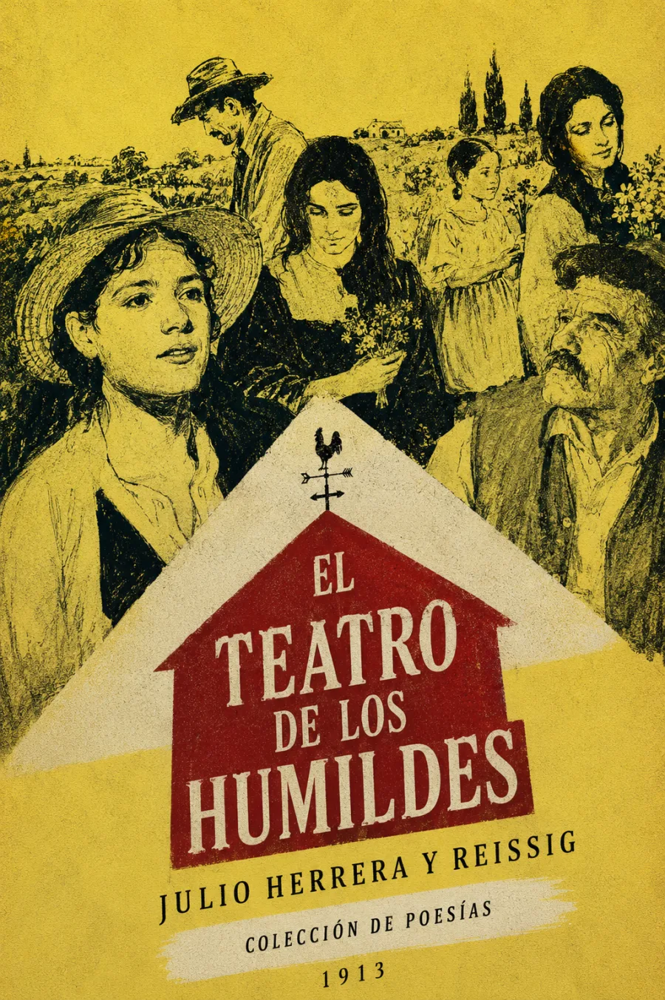

Audiolibros · Cuarta Ola
Julio Herrera y Reissig · Poesías · 1913
El teatro
de los
humildes
La vida pequeña ocupa la escena.
El campo, sus voces y sus horas.
Un mundo cotidiano encendido por el lenguaje.
Los días del campo, otra vez escuchados.
Grabación próximamente
Volumen

Un paisaje que actúa
Publicado en Montevideo por O. M. Bertani en 1913, este volumen póstumo reúne poesías de Julio Herrera y Reissig. El título propone una escena para la imaginación: las formas de la vida rural adquieren presencia mediante el ritmo, el color y la imagen.
Lo humilde se vuelve extraordinario en la mirada del poeta.
En el soneto que da nombre al libro, la tarde se inclina, la noche sonríe y un molino parece abrazar la luna. El paisaje participa de gestos humanos; deja de ser un fondo inmóvil y se convierte en protagonista.
La escucha puede seguir ese tránsito desde la última luz hasta el grillo y las estrellas. Proponemos atender a cómo se entrelazan sonido, perfume y visión: el mundo cotidiano cobra una intensidad que nace del trabajo verbal.
Edición de referencia: Montevideo, O. M. Bertani, 1913. Registro y facsímil · Biblioteca Virtual Miguel de Cervantes. Soneto homónimo · texto consultado. La escena ilustrada interpreta libremente el ambiente rural.
La lectura
Colección de poesías
Grabación próximamente. El índice de audio acompañará los poemas de la edición utilizada.
Valoración

Bueno